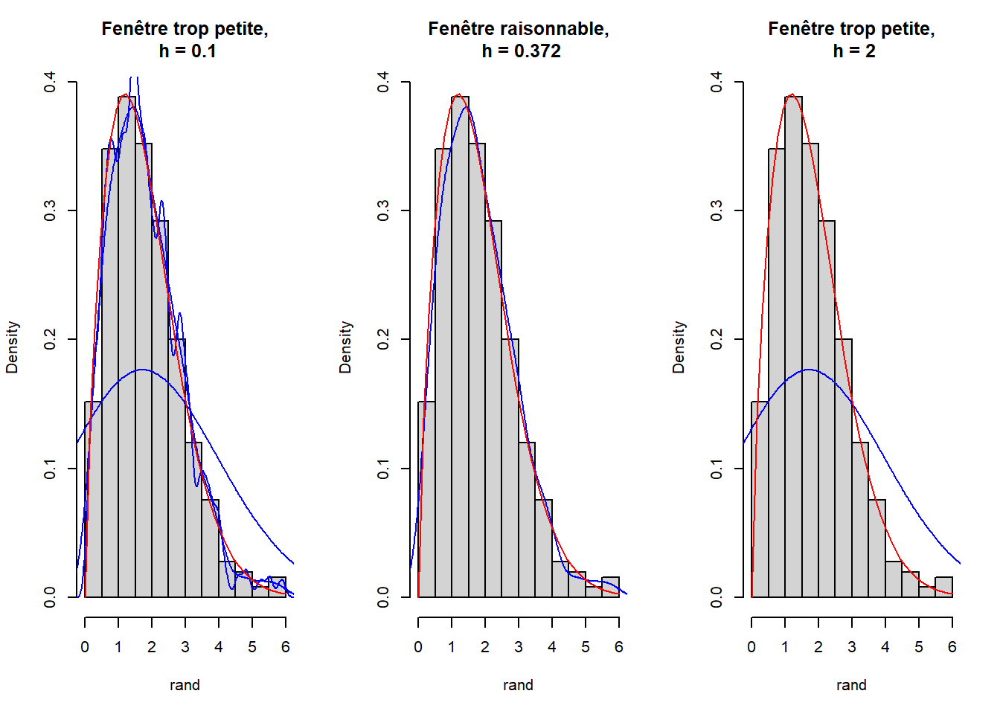

Chapter 4 Méthodes adaptatives :
On a introduit précédemment la notion de l’estimation de la densité qui dépend d’un noyau et d’un paramètre de lissage h. Soit \((\hat{f_h})_{h\in \mathcal H}\) une famille des estimateurs de la fonction de densité \(f\) . La question qui se pose est donc la suivante : comment peut on construire un estimateur à risque optimal à partir de cette famille (en prenant en considération les observations) ?
Dans cette partie, afin de répondre à la question posée, nous allons évoquer dans un premier temps du choix du noyau. Ensuite, nous allons introduire deux méthodes pour le choix du paramètre de lissage h.
4.1 Choix du noyau
Avant de présenter le critère de choix du noyau nous allons introduire quelques outils mathématiques qui simplifient l’écriture du critère.
Tout d’abord, nous avons besoin du risque quadratique \(\mathcal R\) aussi appelé l’erreur quadratique moyenne (Mean Squared Error en anglais). Dans cette partie nous allons noté \(MSE\) le risque quadratique pour des questions pratiques.
\[ \begin{aligned} MSE &= \mathcal R = \mathbb E \left[ \{ \hat f_n(x)-f(x) \} \right] \\ &=\mathbb V \left[ \hat f_n(x) \right] + Biais^2 \left[ \hat f_n(x) \right] \\ &= MSE(x ; n, h, K, f). \end{aligned} \] comme nous l’avons montré précédemment. @ref{#holder}
L’approximation de l’erreur quadratique (Average of Mean Squared Error en anglais) est donnée par l’équation suivante :
\[
AMSE(x)= \frac1{nh} f(x) \int_{\mathbb R}K(t)^2 dt + \left(\frac12h^2f''(x)\int_{\mathbb R} t^2K(t) dt \right)^2.
\]
Elle a été calculée à partir de la variance approchée et du biais approché.
L’erreur quadratique moyenne intégrée (Mean Intregrated Squared Error en anglais) est une mesure théorique communément utilisée pour évaluer la différence entre \(f\) et \(\hat f_n\). Pour l’évaluer on utilise l’erreur quadratique moyenne qu’on intègre sur le support \(\mathbb R\) de l’estimateur. \[ \begin{aligned} MISE(n,h,K,f) &= \int_{\mathbb R}MSE(x;n,h,K,f)dx\\ &= \int_{\mathbb R} \mathbb V\left[ \hat f_n(x) \right] dx+ \int_{\mathbb R} Biais^2 \left[ \hat f_n(x) \right]dx \end{aligned} \]
4.1.1 Comment choisir les paramètres de la méthode ?
Dans la méthode d’estimation à noyau le choix du noyau n’est pas le plus important, le vrai enjeu de cette méthode est le choix de la fenêtre \(h\) (bandwidth). En effet, la fenêtre détermine l’influence des données dans l’estimation. Si \(h\) est petit, l’effet local est important donc on aura beaucoup de bruit. Si \(h\) est grand on aura une estimation plus douce, plus lisse.
Nous pouvons constater l’influence du paramètre \(h\) sur l’exemple suivant : Nous avons simulé 500 variables suivant une loi de Weibull de paramètres (\(\alpha = 1.7\), \(\lambda=2\)) représentées dans l’histogramme. La courbe en rouge est la fonction de densité de la loi de Weibull et la bleue est l’estimation avec la méthode des noyaux sur les variables simulées.
 La fenêtre \(h\) du second graphique est calculé automatiquement par la fonction
densityde R.